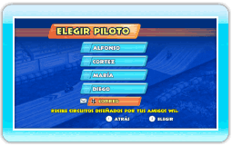
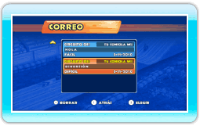
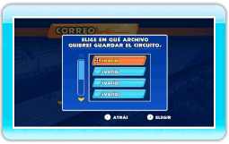

23 |
Cómo recibir circuitos |
 |
Cuando recibas un circuito mediante el servicio WiiConnect24, aparecerá un sobre a la izquierda de CORREO en la pantalla de selección de
piloto. Para ver los circuitos recibidos, selecciona CORREO. Elige el circuito de la lista que quieres guardar.
 Elige un piloto para guardar el circuito. Elige un piloto para guardar el circuito.
Elige en qué archivo quieres guardar el circuito. Si el archivo seleccionado ya contiene un circuito, este se sobrescribirá.
|
 |
 |
 |